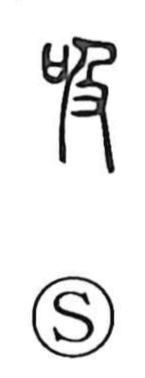

吸

Uncategorized
Kun: suu | On: kyuu
to suck ・ to inhale ・ to absorb
Explanation
Shirakawa presents 吸 as a phono-semantic character: 及 provides the on-reading kyuu, while the whole graph points to the action expressed by the kun reading suu—drawing the breath inward. He even treats the character as echoing the sound of inhalation itself. In traditional breathing practice, notably the Daoist regimen called doin (daoyin), 引 designates the intake of breath and 呼 the out-breath; hence the compound 呼吸 for respiration. Ancient lore tells of shenren who sustained longevity by breathing the wind and drinking dew. Within this cultural frame, 吸 names the inward pull of breath—sucking in, inhaling, absorbing.